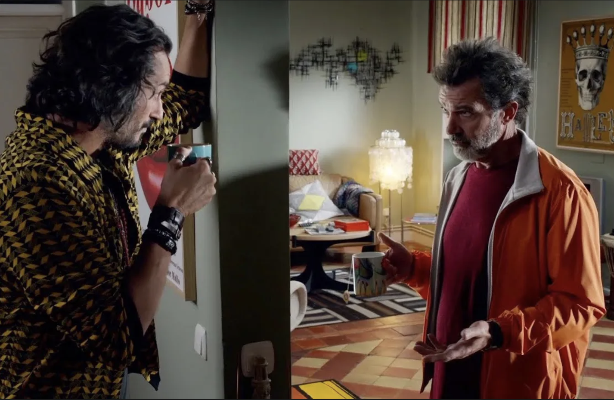
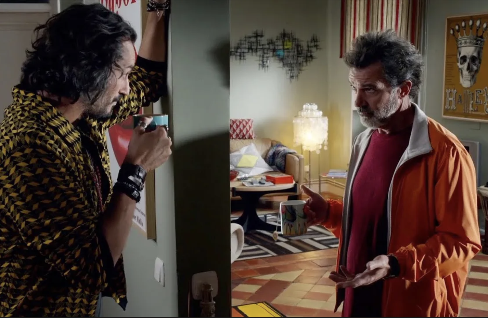

PAIN AND
GLORY
Country/ Countries: Spain
Language(s): Spanish
Director: Pedro Almodóvar
Starring: Antonio Banderas, Asier Etxeandia, Penélope Cruz, Leonardo Sbaraglia
Synopsis
Salvador Mallo, a filmmaker in the twilight of his career, remembers his life: his mother, his lovers, and the actors he worked with. The sixties in a small village in Valencia, the eighties in Madrid, and the present, when he feels an immeasurable emptiness, facing his mortality, the incapability of continuing filming, the impossibility of separating creation from his own life. The need to narrate his past can be his salvation.
Insight on the film
While Almodóvar has denied that Pain and Glory is strictly autobiographical, he has referred to it as “the movie that is closest to me.” A storyline involving Mallo teaching a young man to read when he was a child is based on Almodóvar teaching several people who were in their teens and twenties how to read when he was a boy. Sentiments that Mallo expresses about his family are identical to those Almodóvar has expressed in interviews. Mallo even wears clothes that belong to Almodóvar. This film has such a personal quality to it that, after Almodóvar sent the script to his closest collaborators (including but not limited to Antonio Banderas and his younger brother Agustín Almodóvar), all of them reached out to him to make sure that he wasn’t suffering as much as Mallo does.
What I loved
The British author Martin Amis once said in an interview that writers should divide their time on
Earth into three roughly equal sections: reading, writing, and living. The implication is that being a
sufficiently committed artist will cause you to miss out on two-thirds of life. *Pain and
Glory* provides several moments in which we see how Salvador has maintained a necessary distance from
experience to do what he does; further, we see that he has been keen to use whatever he does encounter
for his art. (As the probably apocryphal Rodin quotation has it, “Nothing is a waste of time if you use
the experience wisely.”)
For example, when Alberto prepares to administer Salvador’s first hit of heroin, he says, “You must be
doing research for something”—as if he can’t believe that Salvador would resort to drug use out of a
personal need. Later, when Salvador’s ailing mother tells him about a dream she had about someone from
their village, she stops short, noticing her son’s growing interest in what she’s saying, and snaps,
“Don’t look at me with that narrator’s face!” She baulks at the idea that her son is using her, which—if
you believe the content of the movie to be mostly autobiographical—is exactly what Salvador, or rather
Almodóvar, is doing.
Brief on production
Director: The most vivid episodes are flashbacks to the director’s youth, with a radiant Penélope Cruz
as his mother and Asier Flores as her precocious son. These adoring vignettes stand out in sharp relief
from the climactic scenes where Salvador engages his elderly mother in candid conversation. These
moments are so achingly real that I felt like I was eavesdropping on a conversation I had no business
hearing.
That’s Almodóvar for you. In interviews he has tried to distance himself from the character of Salvador,
declaring that he and Pedro are not the same. Yet he has also said, “My life has indirectly found its
way into every picture I’ve made, but *Pain and Glory* is the most representative of me. I have
deposited in it everything that I own: my furniture, my paintings, my clothes, my intimacy, a few
ghosts, my childhood memories, and my need to carry on making films as my only way of life.”
Cinematography and colour theory: Pedro Almodóvar’s cinematography, guided by José Luis Alcaine's
photography, uses color to express complex emotions. The film opens in blue, symbolizing melancholy and
longing, and setting the emotional tone. Almodóvar uses blue as a backdrop for memory, loss, and
absence. This contrasts with red, which embodies raw emotion and passion, creating a dialogue between
the two colours. The cinematography reflects this emotional duality, with blue representing sadness and
red representing the intensity of feeling.
Almodóvar’s films are known for their heightened, dreamlike visuals. Even in natural settings, the
lighting feels staged, and the colour palette is vibrant, serving more as emotional cues than realistic
representations. This visual approach, rich with symbolism and melodrama, creates a sense of artifice
that emphasizes the emotional narrative.
Music of Pain and Glory
Reviews
Stills


 
